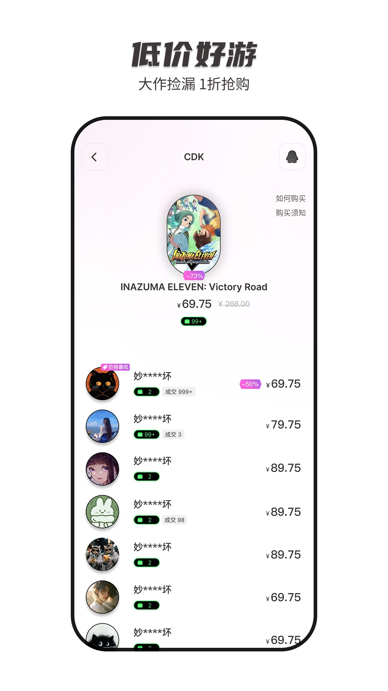

SteamCICI 用了大半年，那些当初没料到的事儿
从抱着试试的心态装上这个 Steam CDK 交易应用，到现在每次买游戏先翻一眼它的最低价——半年时间里习惯是怎么养成的，有哪些坑是慢慢才看清楚的。
装 Steamcici官网 是去年冬天的事，那阵子 Steam 冬促刚结束，我在朋友群里看到有人说「这款游戏的 C2C 平台价比打折还低」，随手搜了下就从Steamcici下载装上了。没想过它会留这么久——说实话当时就是图便宜，把它当一个比价工具用，没太在意。

越用越顺手的几个小地方
第一个习惯的是首页的「最新挂售」栏。一开始我只看「折扣最低」，觉得折扣大才是硬道理。但用着用着发现，折扣大不代表这个价能成交——有些卖家挂了个超低价，但没人接，可能是 CDK 本身有问题，也可能是卖家想钓鱼。「最新挂售」不一样，新上的货还没被其他买家筛过，偶尔能捡到真的有人急出手的好价。现在每天打开先扫一眼这个栏目，再去看折扣。
第二个是搜索框的实时匹配。我之前用其他比价工具都要输完一整串游戏名、点一下搜索按钮才出结果。SteamCICI 这个是边打边弹候选，而且中英文译名都能识别。有次我想搜《赛博朋克 2077》，忘了当时在 Steam 上是叫中文还是英文，试了「赛博」两个字就弹出来了，不用切换语言去 Steam 客户端查标准名再回来搜。这个小细节现在变成了刚需——每次搜索第一反应就是「能不能输一半就出结果」。
第三个是价格卡片的三个数字直接摊开给你：原价、最低价、折扣比例。不用点进详情页先看一眼再决定要不要进去，首页扫一圈就能判断哪些值得点。我之前以为这是所有类似应用都有的设计，后来试了两个竞品，发现有的把折扣藏在详情页里，有的只标最低价不标折扣——才意识到 SteamCICI 这张卡片的信息量做得挺扎实。
越用越烦的地方
最烦的是卖家报价的波动性。同样一款游戏，早上看最低价 65，下午再刷就变成 89，过两天又回到 70——不是卖家撤单重挂，就是有新卖家上架把最低价顶上去。对于想蹲一个确定价格的人来说，这个波动很挠人。我后来习惯了：看到心理价位就直接拍，别等「再看看会不会更低」，等多半等来的是更高。
第二个烦点是搜索结果里偶尔会有「看起来能搜到但点进去没货」的情况。就是搜索框能匹配到游戏名，点进详情页卖家列表却是空的或者只剩一个已经下架的记录。这个频率不算高，但每次遇到都会让人愣一下——「到底是有还是没有？」。后来我摸出个判断法：搜索结果里如果卖家数量大于 1，大概率是真的有；只有 1 个卖家的，点进去之前先做好「可能空跑」的心理准备。
哪个功能成了每天离不开的
资金托管和自动兑换这一套流程。不是说我天天在上面买游戏，而是它让我敢买了。
之前在别的 C2C 平台买过一次 CDK，卖家给了码我输进去发现游戏不对，找客服扯了三天才退钱。装上 SteamCICI 之后第一次买，发现整个流程里我连 CDK 明文都没看到——付款后系统自己从卖家挂单里取码，自己调 Steam 接口兑换，自己比对兑换出来的游戏名和卖家挂的是不是一致。不一致直接自动退款，不用我跟谁扯。
四层安全机制我一开始没太在意，觉得就是平台自己说的一套话术。直到有次兑换完发现游戏名和卖家挂的差了一个后缀（卖家挂的是「标准版」，CDK 实际是「豪华版」），系统自动触发退款，全程我什么都没操作。那次之后我才算真信了这套流程——不是摆出来的噱头，是真的在兜底。
哪个功能碰都没再碰
卖家挂售。从来没试过。我买游戏的频率不高，手里也没有闲置的 CDK 要回血，这个功能对我来说就是个摆设。不过我观察过身边有朋友在上面卖过几个 Steam 夏促囤多的游戏，流程倒是挺顺——平台自动校验 CDK 格式、自动入库、有人下单自动发货，卖家那边基本不用操作。但我就是用不上。
观感修正：当初高估了什么，低估了什么
高估了「折扣最低」栏的参考价值。刚装那会以为这个栏就是平台帮我把最低价都挑好了，直接从这里点进去买就行。后来才发现这个栏里的有些游戏，折扣看起来很大，但卖家报价本身比 Steam 大促还贵——折扣比例是「卖家报价 vs 原价」的比值，不是「卖家报价 vs 史低价」。部分卖家的报价确实能做到比 Steam 大促还低，但不是全部，得自己点开比。
低估了安全机制的重要性。一开始看四层安全机制（实名认证、上架审核、资金托管、自动验证），甚至没去翻Steamcici文档里的运作细节，觉得「C2C 平台不都差不多这套吗」。用了大半年才发现，差别在于这四层是不是真的在自动运转、是不是真的兜住了每一笔交易。之前遇到过系统自动退款那次，如果没有资金托管和自动验证，我就得自己找卖家掰扯——那个体验我不想再来一次。
去留结论
SteamCICI 目前还留在我的手机里，没打算卸载。主要原因很简单：每次想买 Steam 游戏之前，我已经养成了「先打开 SteamCICI 看一眼最低价」的习惯。这个动作不费时间，也就 30 秒，但偶尔能省出一顿午饭钱。
什么信号出现就该换了？如果哪天我连续三次打开它，发现想买的游戏在平台上完全没货、或者所有卖家的报价都比 Steam 客户端的史低价还高，那它就该让位了。但目前还没到这一步。
总体来说，这是个不会让你惊艳也不会让你失望的应用——像一个你用久了的工具，没什么存在感，但真要换的时候才发现已经离不开了。它的定位一直很清晰：帮玩家在 Steam C2C 市场里比价、下单、兜底。半年下来，它确实在做这件事，而且没怎么让我操心。
这套资料在 GitHub、Gitee 和 GitCode 三个仓库都有同步，国内访问哪个快就用哪个，仓库里能找到平台完整的功能文档和使用教程。